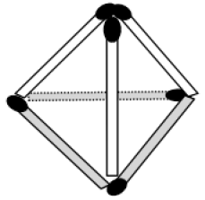

BAKIŞ AÇINIZINI DEĞİŞTİRİN
6 adet kibrit çöpü ile 4 adet eşkenar üçgen nasıl elde edilir?
Cevap:

Bu tür soruları çözerken genelde iki boyutlu düşünmeye alışkınızdır. Oysa üç boyutlu düşünülürse soru kolayca çözülür. Üçgen piramit 6 adet kibrit çöpü ile yapılabilir ve yüzeyinde 4 adet eşkenar üçgen bulunur.